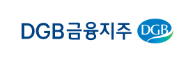
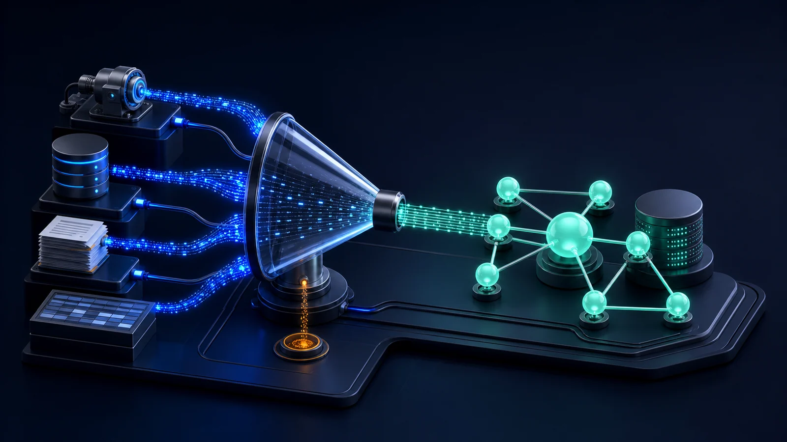
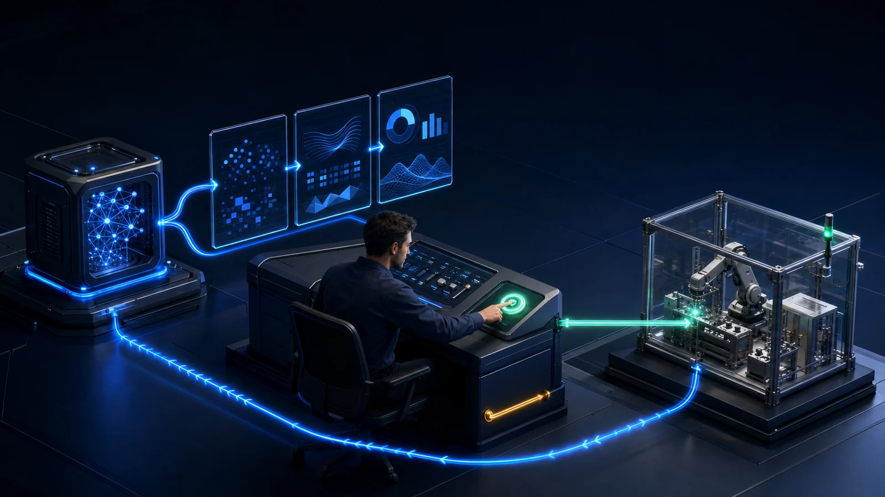

01
AI 기회 발굴 · 데이터 진단
AI 적용 가치가 큰 업무를 선별하고, 실제 학습에 사용할 데이터가 있는지 확인합니다.
- 적용 후보 선정 반복 판단과 대기가 많은 업무를 찾아 기대 효과와 난이도로 우선순위 결정
- 데이터 진단 설비·
업무 시스템 데이터의 품질과 라벨로 학습 가능성 판정 - 데이터 수집 산업 통신 규격(OPC-UA·
Modbus· MQTT)으로 설비를 연결하고 현장에서 데이터를 정리해 학습 자료 확보
AX, From Insight to Action.


AI를 적용할 업무를 정하고, AI의 판단이 실제 현장 조치로 이어지게 만듭니다.
데이터 진단부터 구축과 운영까지 여섯 단계로 나눠 수행합니다.
AI 적용 가치가 큰 업무를 선별하고, 실제 학습에 사용할 데이터가 있는지 확인합니다.

설비·

과제·

현장 검증으로 성과를 확인하고, 사람의 검토·

AI를 MES·

모델 운영 체계를 갖춰 품질 저하에 대응합니다.
데이터와 AI를 산업과 업무 현장에 연결해 운영 방식의 실질적인 변화를 지원합니다.
생산·
AI Agent와 데이터 분석을 활용해 반복 업무를 자동화하고업무 지식 활용과 의사결정 지원
차량과 교통 데이터를 활용해안전하고 효율적인 이동과 운영 환경 지원
에너지 데이터를 분석하고 수요와 사용량을 최적화하여효율적인 에너지 운영 환경 적용
공공 데이터와 AI를 활용해민원·
데이터를 어떤 판단과 운영 개선으로 연결했는지 대표 프로젝트로 확인할 수 있습니다.